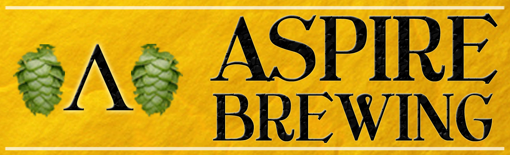

Contact Information
Education
- M.S. in Technical Communication and Information Design, Illinois Institute of Technology, Expected 2012
- Graduate College Dean's Fellowship recipient
- Writing Center Tutor
- Graduate Assistant
- B.A. in English, DePaul University, 2010
- Minors in Interactive Media and Professional Writing
- Summa Cum Laude
- Honors Program and Dean's List: 2006-2010
Experience
- Technical Writing Intern, Thomson Reuters, Chicago, IL, June 2009-present
- Compose and revise client notices based on previously conducted research
- Communicate with subject matter experts to gather information for documentation
- Edit software release notes for clarity, grammar, and accuracy
- Update SQL database schema documentation with changes in company database
- Reformat and rebrand 130-page software user guide and database schema documentation
- Collaborate with technical writing team to determine best approaches for producing documentation
- Compare documentation to Microsoft Manual of Style for Technical Publications standards
- Writing Center Tutor, DePaul University, Chicago, IL, 2009-June 2010
- Consulted with students both face-to-face and through online tutoring sessions to improve their written work
- Provided e-mail feedback on submitted student assignments
- Collaborated with students across the academic curriculum
Technology Skills
- Proficiency with
- Microsoft Word
- Microsoft PowerPoint
- Micosoft Outlook
- Strong Familiarity with
- Adobe Flash and Photoshop
- Flash ActionScript
- Microsoft Excel
- XML, XHTML, HTML, and CSS
- Familiarity with
- Adobe Dreamweaver, InDesign, and Illustrator
- Microsoft Visio
- Java and JavaScript programming languages